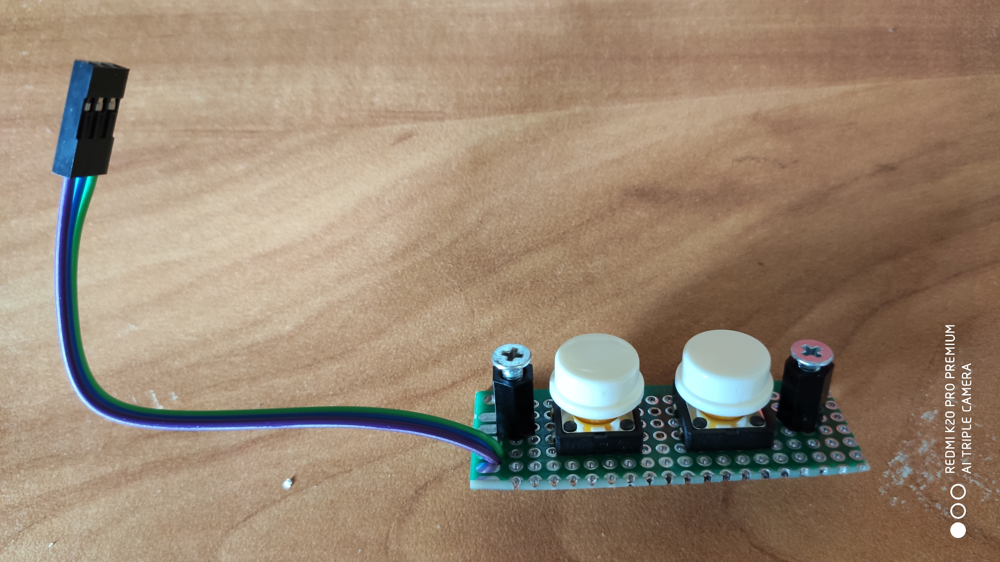

Процесс сборки лезвия меча

За основу был взят проект: КРУТЕЙШИЙ СВЕТОВОЙ МЕЧ СВОИМИ РУКАМИ от Алекса Гайвера
Главное отличие - это генерация звука через модуль DFPlayer вместо чтения карты напрямую и генерации звука программным способом через ШИМ. Новый способ даёт много плюсов:
- качество звука намного лучше;
- контроллер освобождается от лишней работы;
- работает намного стабильнее. Когда собрал первый меч по проекту Алекса, он достаточно часто глючил. Думаю, библиотека генерации звука сырая или не хватает памяти;
- не надо конвертировать файлы в определенный формат, можно использовать обычный MP3;
- не надо высчитывать длительность разных звуков и следить программно, когда они закончат проигрываться;
- легко можно добавлять свои звуки или заменить на свой кастомный набор звуков;
- освобождается 50% памяти под другие фичи.
Из минусов вижу только маленькую паузу 0.1 сек, которая присутствует в начале каждого MP3 файла, и от которой нет возможности избавиться. Это вызывает неприятное ощущение рассинхронизации при ударе меча. Но только если специально обращать на это внимание.
Еще иногда (достаточно редко) MP3 модуль зависает на несколько секунд. При этом меч перестает реагировать на кнопки и моргать. Но потом всё отвисает и продолжает работать. Под дебагом видно, что модуль возвращает какую-то ошибку. Но не стал с этим разбираться, так как это происходит редко, и ошибка происходит в самом DFPlayer, а не в контроллере.
При включении питания (кнопка со светодиодом) меч плавно загорается на 2 сек, показывая процент зарядки. Меч переходит в выключенное состояние. Подсчитывается количество файлов в каждой папке на карте. Можно записать любые mp3 файлы в любом количестве. Имена файлов должны быть от 001.mp3 и далее подряд.
1. Нажатие кнопки 1 более 0.8 секунд - включение меча. Если заряд меньше 10%, то не включается. Если больше, то плавно загорается и проигрывается звук включения.
2. Нажатие кнопки 1 более 3 секунд - включение и переключение режимов горения: Меч - Лампа - Факел по кругу через каждые 3 сек.
В режиме Лампа просто светит без звука.
В режиме Факел имитирует огонь со звуком огня. Файл "09/002.mp3" на карте.
3. Если питание включено, но меч не включен, то через 10 минут воспроизводится напоминание, что нужно выключить питание. Файл "09/003.mp3" на карте. Дальше напоминание повторяется каждую минуту.
1. Короткое нажатие кнопки 1 переключает цвет по кругу:
Красный - Оранжевый - Жёлтый - Зелёный - Голубой - Синий - Фиолетовый - Белый.
Если в режиме факела, переключается палитра пламени.
2. Короткое нажатие кнопки 2 в режиме меча взависимости от настроек
- переключает фоновую музыку (гудение) + режим трещания по кругу или
- воспроизводит произвольно выбранную звуковую цитату - файл из папки "08" на карте.
3. Одновременное нажатие кнопок 1 и 2 переводит в режим регулировки громкости.
Светодиод начинает моргать.
4. Нажатие кнопки 1 более 0.8 секунд - выключение меча. Проигрывается звук выключения и плавно гасится.
5. Нажатие кнопки 2 более 0.8 секунд - переход в настройки. Светодиод начинает моргать.
6. Если во время работы разрядились аккумуляторы до 10%, то меч выключается, проигрывается звук умирающего телефона.
Файл "09/001.mp3" на карте.
7. Взмах меча - воспроизводит звук взмаха. Проигрывает произвольный файл из папки "06" или "07" на карте.
В режиме трещания - изменяет частоту треска.
8. Удар - воспроизводит звук удара и вспыхивает белым. Проигрывает произвольный файл из папки "04" или "05" на карте.
1. Короткое нажатие кнопки 1 - увеличить громкость.
2. Короткое нажатие кнопки 2 - уменьшить громкость.
3. Одновременное нажатие кнопок 1 и 2 - переходит в обычный режим.
4. Если кнопки не нажимать 4 секунды - переходит в обычный режим.
1. Короткое нажатие кнопки 2 - выбор параметра для изменения.
Светодиод моргает соответствующее количество раз:
1 - выбор фонового звука. Выбирает файлы из папки "03" на карте + режим трещания.
2 - выбор режима работы кнопки 2 в режиме меча - кнопка 2 меняет фоновый звук или воспроизводит цитату
3 - выбор режима Меч - Лампа - Факел
4 - выбор звука включения. Выбирает файлы из папки "01" на карте.
5 - выбор звука выключения. Выбирает файлы из папки "02" на карте.
2. Короткое нажатие кнопки 1 - изменить текущий параметр по кругу.
Если текущий параметр - звук включения или выключения, то выбранный звук проигрывается один раз.
3. Нажатие кнопки 2 более 0.8 секунд - выход из настроек.
Выбранные текущие параметры, текущая громкость и цвет записываются в энергонезависимую память.
При следующем включении параметры меча будут восстановлены из памяти.
Модуль MP3-плеера (DFPlayer) На одном форуме была информация, что эти модули нужно брать с чипом YX5200. Если с другим - это аналог, и там может не работать какой-то функционал. Из моей партии 5 шт 2 было с соплёй на контакте TX, которая коротила на землю. Заработали, после устранения. И один странно глючил, его просто выбросил.
Усилитель мощности PAM8403 или на 5Вт Второй звучит лучше, но он чуть больше по высоте из-за конденсатора
Светодиодная адресная лента WS2811 нужна белая, без защиты, 60 led/m, 2 метра
Кнопки управления без защелки
Кнопка со светодиодом нужна на 5В, в данном магазине нужно выбрать вариант 3-9В и с защелкойРазъём для зарядки через балансировщик я брал от старого аккума. Новый можно взять тут
Сам балансировщик тут
Белая труба для лезвия самовывоз из Москвы. Нужна труба 32мм с внутренней крышкой
Звуки в проекте я частично взял из проекта Алекса и сконвертировал их в mp3, а частично подобрал сам. Но так как мой вкус и моё ч.ю. достаточно специфические, то к набору этих звуков нужно относиться как к примеру для демонстрации функционала. Соответственно их легко можно заменить на что-то своё. Удобная программка для редактирование звука: Audacity для тех, кто хочет сделать свои звуки.
Карта памяти - любая micro SD карта. Нужно скопировать содержимое папки SDsounds проекта в корень карты.
Прежде, чем подключать питание к усилителю звука, нужно выставить напряжение на выходе понижайки 5В с помощью микроподстроечника на ней.
На одной макетке (30х70мм) собрал ATMega328 Nano, DFPlayer, MP6050, усилок, понижайку. Впаял разъёмы для подключения питания и светодиода, кнопок, динамика, светодиодной ленты. MP6050 поставил перпендикулярно оси меча и закруглил углы. Это нужно делать осторожно, чтобы не повредить дорожки. Эта макетка шириной 30 мм идеально входит в трубу меча.
Фотки наполовину собранного модуля
Кнопки управления собрал на другой макетке (20х80мм) и на стойках прикрутил ее к ручке меча изнутри. В ручке под кнопки просверлил 2 отверстия 12мм и еще 2 под винты 3мм для стоек.
Собранный модуль

Кнопки управления на ручке
Можно разрезать макетку 50х70мм на две части 30х70 и 20х70.
Для ручки брал сантех трубу 40мм длиной 25см. Это рабочая длина, если вместе с раструбом, то ее длина около 29см. Красил из баллончика. Но можно не красить, к царапинам краска оказалась неустойчивой. Еще нужен раструб от трубы 32мм. В него вставляется лезвие меча - белая труба 32мм. А сам раструб вставляется в ручку.
Аккумы спаял между собой полосками жести от консервной банки. Использовал паяльную кислоту и паяльник 100 Вт. Мощный паяльник нужен, чтобы процесс пайки занимал 2 - 3 секунды. Иначе можно испортить аккум. Сделал батарею 2 + 1 аккум, обмотал малярным (бумажным) скотчем, чтобы не коротило ничего. 2 аккума по толщине идеально входят в трубу ручки 40мм. И еще один входит под плату с кнопками. Если делать как предлагает Алекс - пихать 3 аккума вместе параллельно, то ручка в месте, где лежат аккумы, будет треугольной.
Разъем под зарядку и кнопку питания выбрал самые тонкие - 8мм. Чтобы сильно не торчали, утопил их внутрь ручки. Для этого в месте их крепления вставил в раструб кусок трубы того же диаметра - 40мм. В раструбе сделал отверстия по 10мм, чтобы кнопка и гдездо зарядки провалились через них, а в куске трубы под ними отверстия по 8мм и закрутил изнутри гайками.
У меня была кнопка с очень мягкой пластмассой. Поэтому паять надо аккуратно - не перегревать.
Разъем зарядки
Кнопка питания
Разъем зарядки подключил через самодельный предохранитель. Хотя аккумы должны иметь встроенную защиту, но проверять, как она работает, не стал. Дело в том, что если контакты гнезда зарядника замкнуть, то будет короткое замыкание. Если защита не сработает, то аккумы могут разогреться, загореться и взорваться. Мне было лень искать маленький штатный предохранитель, поэтому взял 5 волосков от провода МГТФ. На 5 А должно хватить.
Разъем для балансировщика вывел с другого конца трубы и оставил его внутри. То есть чтобы заряжать через него, нужно разобрать меч. Но, надеюсь, это понадобится делать не часто. Если саморазряд у каждого из трех аккумов одинаковый, то штатного гнезда для зарядки должно хватать. Но если меч перестал заряжаться на 100%, то можно попробовать зарядить его балансировщиком.
Отверстия для смягчения звука можно не делать, если динамик не ловит резонанс и нет искажений. Но кому-то звук может больше понравиться с ними - на любителя. По моим ощущениям с отверстиями басы уменьшались.
Динамик 40мм нормально заходит в уплотнительную резинку раструба. Эти резинки мне попадались двух типов - с и без канавки посередине. Нужно найти с канавкой, в нее динамик и входит. Штатно в этой канавке лежит пластиковое кольцо для жесткости, как я понимаю. Его можно оставить. Если динамик упирается контактами, то можно их аккуратно убрать и подпаяться к проводам катушки напрямую. В местах возможного касания с корпусом использовать термоусадочную трубку для изоляции.
Уплотнительное кольцо
Для защиты динамика использовал сетку для раковины из нержавейки. Ее нужно обрезать хорошими ножницами и сточить острые углы. Я использовал болгарку для этого.
Защита динамика
Светодиодную ленту собрал из двух одинаковых кусков по 16 сегментов (48 диодов). Склеил их обратными сторонами (с клеем) в одинаковом направлении стрелок. Контакты 12V, GND, DI на двух кусках подпаял параллельно и вывел шлейф с разъемом. Не стал заморачиваться с конденсатором. Работает без него вполне нормально. Закрутил ленту в упаковочную пенку в виде колбаски и обмотал прозрачным скотчем. В результате должна получиться толщина на 2-3 мм меньше внутреннего диаметра трубы. Запихнул полученную колбаску в трубу меча. Труба у меня 87 см, часть заходит в ручку. Пенка хорошо убирает зернистость - отдельные светодиоды не видны. В ней лента не болтается и не боится ударов. У меня пенка осталась от какой-то посылки, но можно использовать ту, что стелится под ламинат.
Процесс сборки лезвия меча